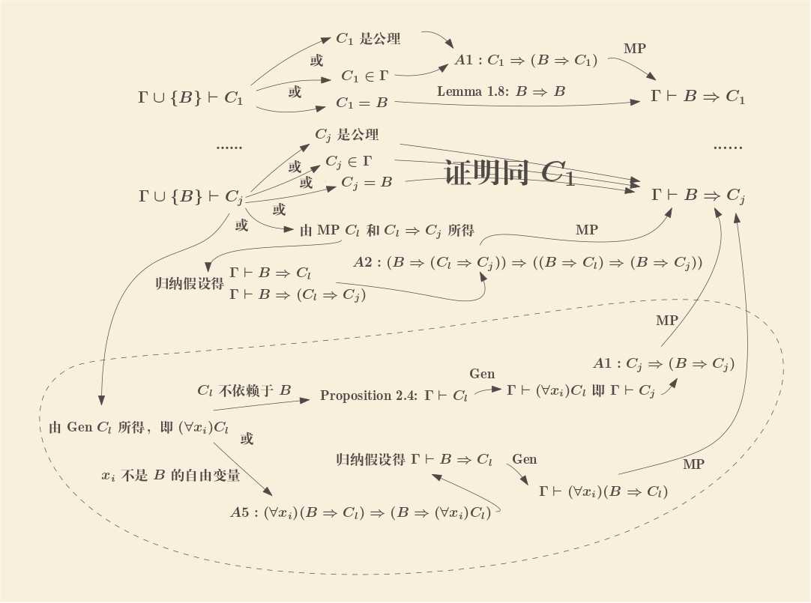
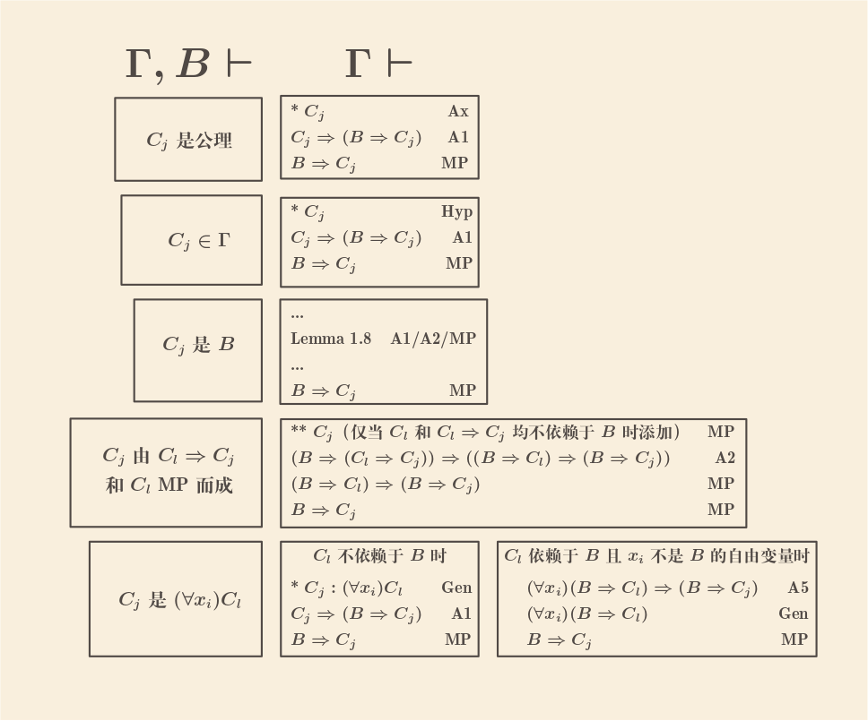

2.3 First-Order Theories
一阶理论：一个一阶理论 \(\mathcal{K}\) 使用一个一阶语言的符号及其公式，以及如下这些公理（公理分两种： 逻辑公理和非逻辑公理）以及演绎规则
2.3.1 Logical Axioms
- 逻辑公理
-
如果 \(B\)，\(C\)，\(D\) 都是合式公式，则如下是 \(\mathcal{K}\) 的逻辑公理
- A1: \(B \Rightarrow (C \Rightarrow B)\)
- A2: \((B \Rightarrow (C \Rightarrow D)) \Rightarrow ((B \Rightarrow C) \Rightarrow (B \Rightarrow D))\)
- A3: \((\neg C \Rightarrow \neg B) \Rightarrow ((\neg C \Rightarrow B) \Rightarrow C)\)
- A4: 如果 \(B(x_i)\) 是一个合式公式，且项 \(t\) 可以自由替换 \(x_i\) 则 \((\forall x_i)B(x_i) \Rightarrow B(t)\) （特别地，\(t\) 可以是 \(x_i\)，于是总有 \((\forall x_i)B \Rightarrow B\)）
- A5: 如果 \(B\) 不包含 \(x_i\) 的自由变量，则 \((\forall x_i)(B \Rightarrow C) \Rightarrow (B \Rightarrow (\forall x_i)C)\)
2.3.2 Proper Axioms
每一个理论都有可能有其他的非逻辑公理，也可能完全没有，如果没有的话则称为一阶谓词演算（first-order predicate calculus）
2.3.3 Rules of Inference
演绎规则有两个
- Modus ponens（缩写为 MP)：\(B\) 和 \(B \Rightarrow C\) 推出 \(C\)
- Generalization（缩写为 Gen)：\(B\) 推出 \((\forall x_i)B\)
注意到根据 2.2 的 Property 3 和 Property 6， 在一个解释下，如果对为真的式子运用 MP 和 Gen 仍然会得出为真的式子
一些一阶理论的例子
- Partial order：该理论使用的语言只有一个谓词符号 \(A_1^2(x_i, x_j)\)
写作 \(x_i < x_j\)，并且有两个非逻辑公理
- \((\forall x_1)(\neg x_1 < x_1)\) （irreflexivity）
- \((\forall x_1)(\forall x_2)(\forall x_3)(x_1 < x_2 \wedge x_2 < x_3 \Rightarrow x_1 < x_3)\) （transitivity）
- Group theory：该理论使用语言有一个谓词符号 \(A_1^2(t, s)\) 写作 \(t
= s\)，一个函数符号 \(f_1^2(t, s)\) 写作 \(t + s\)， 一个常量符号
\(a_1\) 写作 0，并且有以下非逻辑公理
- \((\forall x_1)(\forall x_2)(\forall x_3)(x_1 + (x_2 + x_3) = (x_1 + x_2) + x_3)\) （associativity）
- \((\forall x_1)(0 + x_1 = x_1)\) （identiy）
- \((\forall x_1)(\exists x_2)(x_2 + x_1 = 0)\) （inverse）
- \((\forall x_1)(x_1 = x_1)\) （reflexivity of =）
- \((\forall x_1)(\forall x_2)(x_1 = x_2 \Rightarrow x_2 = x_1)\) （symmetry of =）
- \((\forall x_1)(\forall x_2)(\forall x_3)(x_1 = x_2 \wedge x_2 = x_3 \Rightarrow x_1 = x_3)\) （transitivity of =）
- \((\forall x_1)(\forall x_2)(\forall x_3)(x_2 = x_3 \Rightarrow x_1 + x_2 = x_1 + x_3 \wedge x_2 + x_1 = x_3 + x_1)\) （substitutivity of =）
2.4 Properties of First-Order Theories
Proposition 2.1
\(\mathcal{K}\) 中的重言式 \(B\) 也是 \(\mathcal{K}\) 的定理，且其证明只需要公理 A1~A3 和 MP
\(B\) 是由一个 \(\mathcal{L}\) 中的重言式 \(B_{\mathcal{L}}\) 替换其 statement letters 为特定 wf 所得的， 由 Proposition 1.14 存在一个 \(\mathcal{L}\) 中的证明， 将该证明中这些 statement letters 替换为其对应 wf（如果证明里出现其他没有出现在 \(B_{\mathcal{L}}\) 中的 statement letters 则替换为任意 wf）即可得到一个 \(\mathcal{K}\) 中 \(B\) 的证明，且只用到 A1~A3 和 MP
Proposition 2.2
一阶谓词演算（没有非逻辑公理）的定理在所有解释下都是真的（逻辑有效 logically valid）
由 Property 7 公理 A1~A3 是逻辑有效的，由 Property 10 公理 A4 是逻辑有效的，由 Property 11 公理 A5 逻辑有效，又由 Property 3 和 Property 6 易知 MP 和 Gen 这两个规则都能延续逻辑有效的性质，故所有定理均是逻辑有效的
Corollary 2.3
一阶谓词演算是一致的（\(B\) 和 \(\neg B\) 不能同时有证明）
如果 \(B\) 和 \(\neg B\) 都是定理（有证明, e.g. \(\vdash\)），由 Proposition 2.2 则两者都是逻辑有效的（e.g. \(\vDash\)），这是不可能的， 因为任意解释下 \(B\) 和 \(\neg B\) 不能同时为真
实际上，假如 \(B\) 和 \(\neg B\) 同时有证明，则根据爆炸原理 \(B \Rightarrow (\neg B \Rightarrow C)\)（一个重言式，根据 Proposition 2.1 则也是定理），则会导致任意 \(C\) 都可以证明；这又能推导出，假如有任意公式不是定理的话，则 \(\mathcal{K}\) 一致
演绎定理的一些前置说明
命题演算里的演绎定理没办法原封不动地移植到一阶理论中，例如 \(B \vdash_{\mathcal{K}} (\forall x_i)B\) 总是成立（Gen）， 但 \(\vdash_{\mathcal{K}} B \Rightarrow (\forall x_i)B\) 却不一定成立（相当意外的）：例如 \(x_1 = 0 \Rightarrow (\forall x_1)x_1 = 0\) 1，当 \(x_1 = 0\) 时不成立，故其不是逻辑有效，由 Proposition 2.2 知不可能是定理
一个有修改但依然有用的演绎定理是可以推导出来的，不过首先要一些额外的定义
- Depend upon
-
令 \(\Gamma\) 是一个合式公式集，合式公式 \(B \in \Gamma\)，又 \(D_1, D_2, ..., D_n\) 是从 \(\Gamma\) 推导出的一个证明； 称 \(D_i\) 依赖于（depend upon）\(B\) 当且仅当：
- \(D_i\) 就是 \(B\)，或者
- \(D_i\) 是一些前面的公式用 MP 或 Gen 产生的直接结果，而这些前面的公式中至少有一个是依赖于 \(B\) 的
Proposition 2.4
假如 \(C\) 在 \(\Gamma, B \vdash C\) 的一个证明中不依赖于 \(B\)，则有 \(\Gamma \vdash C\)
直觉可知从 \(C\) 开始往前上溯（MP 时上溯两个源头，Gen 则上溯一个源头，其他的停止）一直到证明的开始， 所经过的公式不可能有 \(B\)，这些经过的公式就构成了 \(\Gamma \vdash C\) 的证明（亦即是原来证明的的一个子集）
书里用归纳法证明：
设 \(\Gamma, B \vdash C\) 的一个证明序列是 \(D_1, D_2, ..., D_n\)（其中 \(D_n\) 就是 \(C\) 了），且 \(C\) 不依赖于 \(B\)； 归纳假设 \(i < n\) 时，若 \(D_i\) 不依赖于 \(B\)，则 \(\Gamma \vdash D_i\)；现在考虑 \(D_n\)，若 \(D_n \in \Gamma\) 或者是一个公理，则直接得出 \(\Gamma \vdash D_n\)，若是由前面的一条公式 Gen 或 前面两条公式 MP 所得，由于 \(D_n\) 不依赖于 \(B\)，那之前的这一条或两条公式也不依赖于 \(B\)，用归纳假设就得出它们可以仅由 \(\Gamma\) 推出，因此 \(D_n\) 也就可以仅由 \(\Gamma\) 推出了
Proposition 2.5 (Deduction Theorem)
（拗口的）演绎定理
假设在 \(\Gamma, B \vdash C\) 的证明序列（步骤） \(D_1, D_2, ..., D_n\) 里，不存在 Gen 某个公式的步骤且该公式依赖于 \(B\) 且添加的量词变量是 \(B\) 的自由变量，则 \(\Gamma \vdash B \Rightarrow C\)

如上图，基本上跟命题逻辑里的演绎定理证明过程是一样的，只是多了 Gen 的分支情况（虚线框内）
不过这个演绎定理里的条件太过拗口冗长，下面这些弱一些的推论可能在实际中更有用
Corollary 2.6
如果 \(\Gamma, B \vdash C\) 的证明序列中没有涉及到添加 \(B\) 的自由变量为量词的 Gen 的话，则 \(\Gamma \vdash B \Rightarrow C\)
Corollary 2.7
如果 \(B\) 是封闭公式的话（没有自由变量）且 \(\Gamma, B \vdash C\)，则 \(\Gamma \vdash B \Rightarrow C\)
Extension of Propositions 2.4–2.7
（这一段有点不太好理解，直接按我自己的理解方式来说明）
演绎定理实际上是将旧证明 \(\Gamma, B \vdash C_j\) 转换为新证明 \(\Gamma \vdash B \Rightarrow C_j\) 的一个算法 （当然首先旧证明序列必须满足上述那些条件）；如下是一种具体方法

按顺序读取旧证明的每一步 \(C_j\)，在上图左边确定 \(C_j\) 所属，然后输出对应右边的一组公式序列， 这些一组组的公式序列连接起来即组成新的证明
观察上图可知：
右边每一组序列的最后一个公式必定是 \(B \Rightarrow C_j\)，这正是演绎定理归纳法要证明的
所有不依赖于 \(B\) 的 \(C_j\) 会同时出现在新旧证明中：见
*或**处， 其中**处的意思是，该 \(C_j\) 在本组公式序列里实际上是没有用到的， 特意补全上去就是为了保证所有不依赖于 \(B\) 的 \(C_j\) 也都出现在新证明中， 也许后续证明（例如某个 Gen）会用到所有不依赖于 \(B\) 的 \(C_j\) 不单止会同时出现在新旧证明，而且它们的 \(\Gamma\) 依赖集也是一样的 （因为证明过程是完全相同的）
旧证明 \(C_j\) 与对应新证明 \(B \Rightarrow C_j\) 也有相同的 \(\Gamma\) 依赖集
Proof以 \(j\) 进行归纳
- 若 \(C_j\) 是公理，不依赖于 \(\Gamma\) 中任何前提，对应右侧 \(B \Rightarrow C_j\) 仅由公理 MP 得出，也不依赖于 \(\Gamma\) 中任何前提
- 若 \(C_j \in \Gamma\)，则依赖于自身，右侧由 \(C_j\) 和公理 MP 得出，故也依赖于 \(C_j\)
- 若 \(C_j\) 是 \(B\)，不依赖于 \(\Gamma\) 中任何前提，右侧是 Lemma 1.8， 无任何依赖，自然也不依赖于 \(\Gamma\) 中任何前提
- 若 \(C_j\) 为 \(C_l \Rightarrow C_j\) 和 \(C_l\) MP 所得，则其 \(\Gamma\) 依赖集为这两前件依赖集的并集， 由归纳假设，该并集等于 \(B \Rightarrow (C_l \Rightarrow C_j)\)¹ 和 \(B \Rightarrow C_l\)² 依赖集的并集， 右侧恰好涉及到公式 ¹² （两个 MP），因此两侧 \(\Gamma\) 依赖集相同
- 若 \(C_j\) 为 \((\forall x_i)C_l\)，则其依赖集等于 \(C_l\) 的依赖集； 右侧有两种可能的输出，第一种用到 Gen \(C_l\)，由 3 知新旧证明中的 \(C_l\) 是有相同依赖集的； 第二种用到 Gen \(B \Rightarrow C_l\)，由归纳假设知左侧 \(C_l\) 和右侧 \(B \Rightarrow C_l\) 也是有相同依赖集的
当且仅当旧证明有 Gen 时（\((\forall x_i)C_l\)），新证明有 Gen（\((\forall x_i)C_l\) 或者 \((\forall x_i)(B \Rightarrow C_l)\)），由 3 和 4 知两边的 \(\Gamma\) 依赖集一样，且两边添加的量词变量也一样（\(x_i\)）， 因此可以得出下面的结论
如果 \(\Gamma, A, B \vdash C\) 的证明满足
a没有一个 Gen 的步骤是依赖于 \(A\) 的且其添加的量词变量是 \(A\) 的自由变量b没有一个 Gen 的步骤是依赖于 \(B\) 的且其添加的量词变量是 \(B\) 的自由变量则可以直接 \(\Gamma \vdash A \Rightarrow (B \Rightarrow C)\)
由 b 和演绎定理可得新证明
\(\Gamma, A \vdash B \Rightarrow C\)，由 5 和 a 可知，这个新的证明也满足 a， 因此可以再次使用演绎定理推出
\(\Gamma \vdash A \Rightarrow (B \Rightarrow C)\)
这个结论可以推而广之，只要原始证明对多个前提都满足条件的话，则可以一步多次演绎定理
Exercises
2.27 证明以下定理
a\(\vdash (\forall x)(B \Rightarrow C) \Rightarrow ((\forall x)B \Rightarrow (\forall x)C)\)Proof- \((\forall x)(B \Rightarrow C)\) Hyp
- \((\forall x)(B \Rightarrow C) \Rightarrow (B \Rightarrow C)\) A4
- \(B \Rightarrow C\) MP 上述两个
- \((\forall x)B\) Hyp
- \((\forall x)B \Rightarrow B\) A4
- \(B\) MP 上述两个
- \(C\) MP 3 和 6
- \((\forall x)C\) Gen
上述证明了 \((\forall x)(B \Rightarrow C), (\forall x)B \vdash (\forall x)C\) 注意上述证明只有最后一步是 Gen， 且量词 \(x\) 不是两个前提的自由变量，故可以使用 DT（Deduction Theorem）得出证明
b\(\vdash (\forall x)(B \Rightarrow C) \Rightarrow ((\exists x)B \Rightarrow (\exists x)C)\)Proof- \((\forall x)(B \Rightarrow C)\) Hyp
- \((\forall x)(B \Rightarrow C) \Rightarrow (B \Rightarrow C)\) A4
- \(B \Rightarrow C\) MP 上述两个
- \((B \Rightarrow C) \Rightarrow (\neg C \Rightarrow \neg B)\) Lemma 1.11#e
- \(\neg C \Rightarrow \neg B\) MP 上述两个
- \((\forall x)(\neg C \Rightarrow \neg B)\) Gen
- \((\forall x)(\neg C \Rightarrow \neg B) \Rightarrow ((\forall x)(\neg C) \Rightarrow (\forall x)(\neg B))\) 2.27#a
- \((\forall x)(\neg C) \Rightarrow (\forall x)(\neg B)\) MP 上述两个
- \(((\forall x)(\neg C) \Rightarrow (\forall x)(\neg B)) \Rightarrow (\neg (\forall x)(\neg B) \Rightarrow \neg (\forall x)(\neg C))\) Lemma 1.11#e
- \(\neg (\forall x)(\neg B) \Rightarrow \neg (\forall x)(\neg C)\) MP 上述两个
上述证明了 \((\forall x)(B \Rightarrow C) \vdash (\exists x)B \Rightarrow (\exists x)C\)，唯一一步 Gen 其量词变量 \(x\) 不是前提的自由变量，故可以用 DT
c\(\vdash (\forall x)(B \wedge C) \Leftrightarrow (\forall x)B \wedge (\forall x)C\)ProofTODO
d\(\vdash (\forall y_1)...(\forall y_n)B \Rightarrow B\)Proof- \((\forall y_1)...(\forall y_n)B\) Hyp
- \((\forall y_1)...(\forall y_n)B \Rightarrow (\forall y_2)...(\forall y_n)B\) A4
- \((\forall y_2)...(\forall y_n)B\) MP 上述两个
- 反复进行上面的操作直到剩下 \(B\)
e\(\vdash \neg (\forall x)B \Rightarrow (\exists x) \neg B\)Proof- \(\neg \neg B \Rightarrow B\) Lemma 1.11#a
- \((\forall x)(\neg \neg B \Rightarrow B)\) Gen
- \((\forall x)(\neg \neg B \Rightarrow B) \Rightarrow ((\forall x)(\neg \neg B) \Rightarrow (\forall x)B)\) 2.27#a
- \((\forall x)(\neg \neg B) \Rightarrow (\forall x)B\) MP 上述两个
- \(((\forall x)(\neg \neg B) \Rightarrow (\forall x)B) \Rightarrow (\neg(\forall x)B \Rightarrow \neg (\forall x)(\neg \neg B))\) Lemma 1.11#e
- \(\neg(\forall x)B \Rightarrow \neg (\forall x)(\neg \neg B)\) MP 上述两个
2.28 证明以下两个理论有相同的定理集合
令 \(K\) 是一个一阶理论，令 \(K^{\#}\) 是一个有如下公理的形式化理论：
a\((\forall y_1)...(\forall y_n)B\)，其中 \(B\) 是 \(K\) 中的公理，\(y_1, ..., y_n (n \ge 0)\) 是任意变量b\((\forall y_1)...(\forall y_n)(B \Rightarrow C) \Rightarrow ((\forall y_1)...(\forall y_n)B \Rightarrow (\forall y_1)...(\forall y_n)C)\)， 其中 \(B\) 和 \(C\) 是任意公式，\(y_1, ..., y_n\) 是任意变量且 MP 是 \(K^{\#}\) 的唯一演绎规则
这个证明可以表明了添加额外的公理能把 Gen 替换掉
（以下将 \((\forall y_1)...(\forall y_n)\) 缩写为 \((\forall y_{1..n})\) 以免括号太多眼花）
首先证明 \(K^{\#}\) 的两个公理也是 \(K\) 中的公理/定理
a很简单，只要对 \(B\) 应用 \(n\) 次 Gen 就可以得出b若 \(n = 0\)，则退化为 \((B \Rightarrow C) \Rightarrow (B \Rightarrow C)\)，直接用 Lemma 1.8 得出结果， 以下证明 \(n > 0\) ：- \((\forall y_{1..n})(B \Rightarrow C) \Rightarrow ((\forall y_{1..n})B \Rightarrow (\forall y_{1..n})C)\) Hyp
- \((\forall x)((\forall y_{1..n})(B \Rightarrow C) \Rightarrow ((\forall y_{1..n})B \Rightarrow (\forall y_{1..n})C))\) Gen
- \((\forall x)(\forall y_{1..n})(B \Rightarrow C) \Rightarrow (\forall x)((\forall y_{1..n})B \Rightarrow (\forall y_{1..n})C)\) 2.27#a 和 2 MP 得出
- \((\forall x)((\forall y_{1..n})B \Rightarrow (\forall y_{1..n})C) \Rightarrow ((\forall x)(\forall y_{1..n})B \Rightarrow (\forall x)(\forall y_{1..n})C)\) 2.27#a
- \((\forall x)(\forall y_{1..n})(B \Rightarrow C) \Rightarrow ((\forall x)(\forall y_{1..n})B \Rightarrow (\forall x)(\forall y_{1..n})C)\) Corollary 1.10 3 和 4 得出
反复应用上述步骤，就能添加任意多的量词变量
由于 \(K^{\#}\) 只有 MP，从这两个公理出发产生的定理也必定是 \(K\) 中的定理（\(K^{\#} \subseteq K\)）
下面用归纳法证明若 \(\vdash_K B\)，则 \(\vdash_{K^{\#}} (\forall y_{1..n})B\)，令 \(D_1, ..., D_m\) 是 \(\vdash_K B\) 的证明序列，
- \(D_1\) 必定是 \(K\) 中的公理，由公理
a直接得出 \(\vdash_{K^{\#}} (\forall y_{1..n})D_1\) - 假设 \(i < m\) 时命题成立，现在考虑 \(\vdash_K D_m\)
- 若 \(D_m\) 是 \(K\) 中公理，由
a得出 \(\vdash_{K^{\#}} (\forall y_{1..n})D_m\) - 若 \(D_m\) 是 \(D_l \Rightarrow D_m\) 和 \(D_l\) MP
而得，由归纳假设有 \(\vdash_{K^{\#}} (\forall y_{1..n})(D_l \Rightarrow
D_m)\) 以及 \(\vdash_{K^{\#}} (\forall y_{1..n})(D_l)\)，由
bMP 两次即可得到 \(\vdash_{K^{\#}} (\forall y_{1..n})D_m\) - 若 \(D_m\) 是 \((\forall x)D_l\)，由归纳假设有 \(\vdash_{K^{\#}} (\forall y_{1..n} x)D_l\)，也就是 \(\vdash_{K^{\#}} (\forall y_{1..n})D_m\)
- 若 \(D_m\) 是 \(K\) 中公理，由
当 \(n = 0\) 时，\(\vdash_{K^{\#}} (\forall y_{1..n})B\) 即 \(\vdash_{K^{\#}} B\)，故 \(K\) 的定理也必定是 \(K^{\#}\) 的定理（\(K \subseteq K^{\#}\)）
2.29 证明 Extension of Propositions 2.4–2.7
上面已经证明了